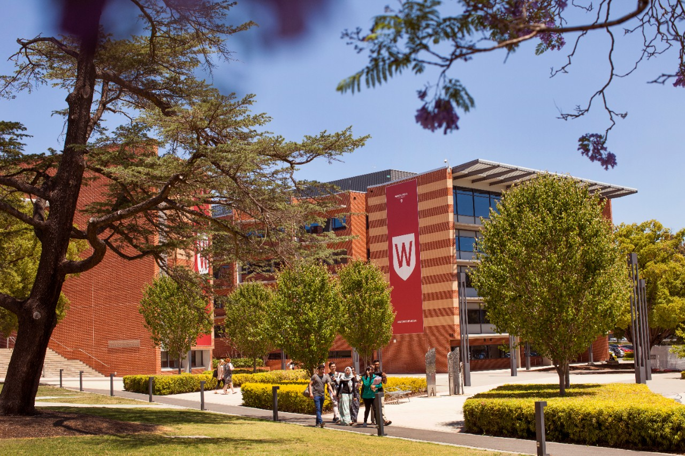
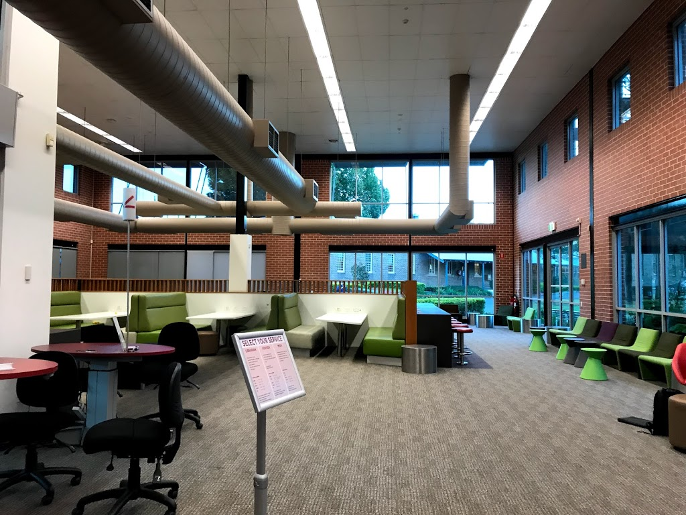
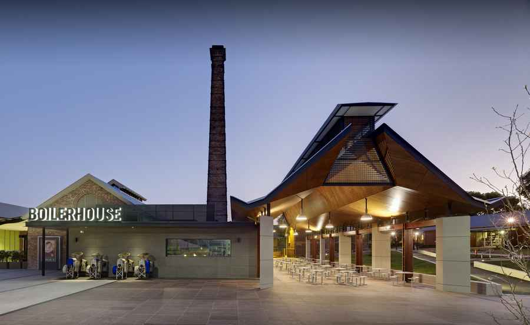
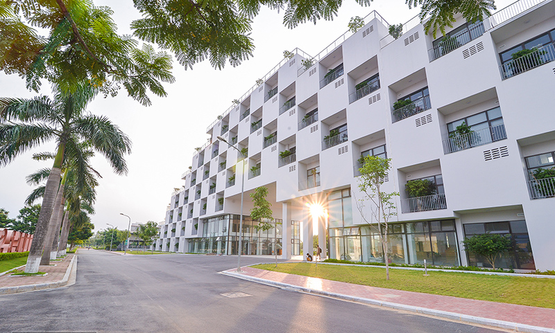
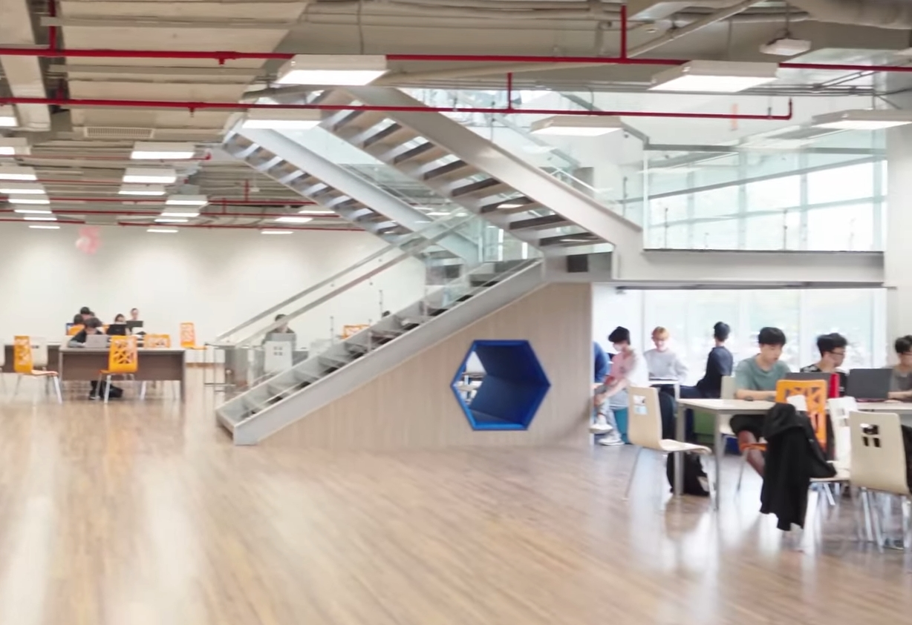
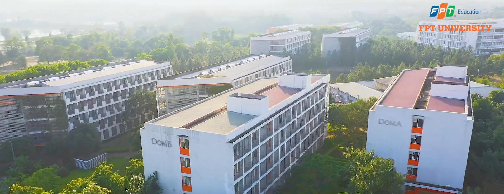
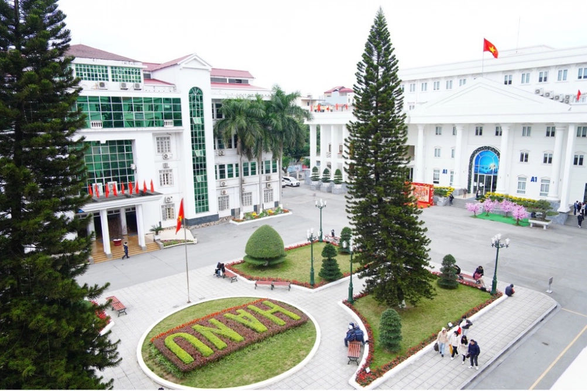
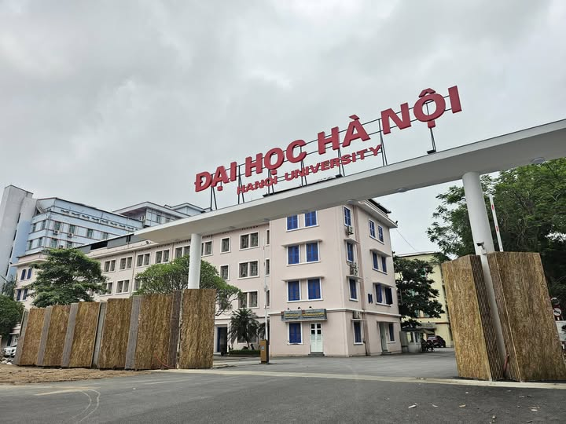
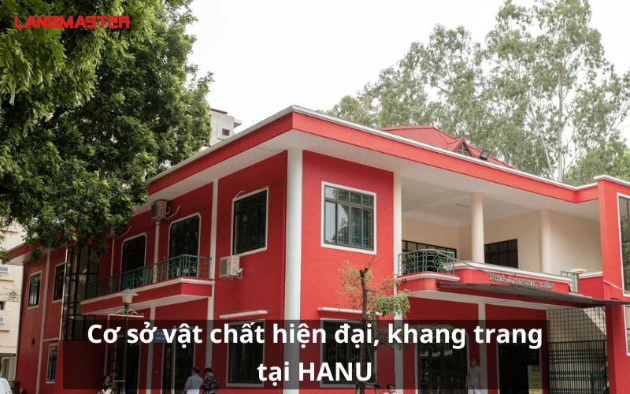

1. Western Sydney University (Parramatta South)



- Spacious and modern campus layout with academic buildings, open green spaces, historic elements, social spaces, and recreational areas.
- The Whitlam Library offers both physical and digital learning resources, quiet study zones, group study areas, and support from staff.
- There are cafés and snack outlets available. My personal favourite was Boilerhouse dining area with lunch deal $6.5AUD for the gigantic fries with gravy.
- Highly accessible by public transport. Spacious parking and multiple bus routes stop directly outside the campus. And the best part is free shuttle bus service connecting Parramatta City, North, and South campuses.
- Excellent student support services via the Student Services Hub including welfare support, campus security, study assistance, etc. I would recommend face-to-face consultant over email as the ammount of mail sent is substantial.
- Overall: 10/10
2. FPT University (Hanoi)



- Modern, unique and visually appealing design. The campus has 30ha of green spaces, open walkways, and academic buildings. My personal favourite is Alpha building that resembles a dragon ascending.
- Large collection of textbooks, e-books, and digital learning resources. The campus also provides quiet both study spaces and collaborative learning areas. There is also a public piano that can be used anytime.
- Two main canteens serve a wide range of meals, drinks, and snacks throughout the day. The campus also includes convenience stores and service areas, making daily student life very comfortable.
- Although the Hoa Lac campus is located outside the city center, transportation is relatively convenient thanks to dedicated bus routes and FPT shuttle services. However, the rush hour is crazy.
- Robust student support services including accommodation support, laundry, convenience stores, health support, sports facilities, and various student clubs and activities.
- Overall: 9/10
3. HANU aka Hanoi University (Hanoi)



- Clean and professional urban campus design with modern academic buildings and well-organized learning spaces. Despite the modest campus area, it makes efficient use of space with lecture halls, open courtyards, and student gathering areas.
- Very quiet environment for study and research. Students have access to books, journals, digital resources. The library is especially valuable for language and international studies students.
- Very basic with affordable meals, drinks, and snacks, almost too basic. However, the surrounding Thanh Xuan district provides many cafés and local restaurants.
- As the university is located right in the center of Hanoi, it is highly accessible by any type of transportation. It is surprisingly less chaotic during rush hour compared to other locations.
- HANU provides essential student services including academic advising, library services, language labs, etc. The university is especially well known for supporting students in foreign language and international programs.
- Overall: 9/10